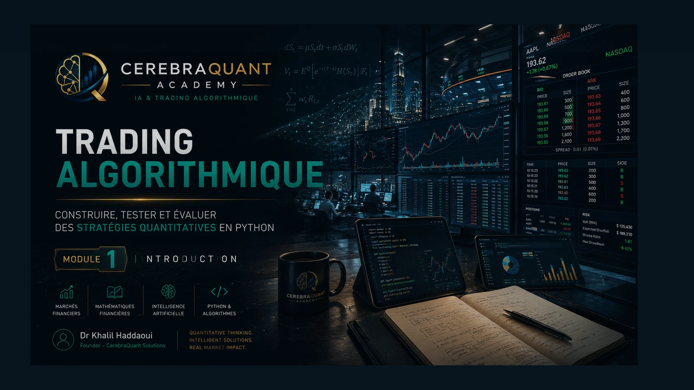

Getting Started with Algorithmic Trading
Introduction au trading algorithmique, cycle de recherche, signaux et backtesting.
Demander le syllabus & les tarifs ↗31 programmes conçus pour relier mathématiques, données, Python et validation quantitative. Des formations avancées dispensées en ligne et en direct pour les particuliers et les entreprises.
Découvrez les 31 formations et ateliers issus de nos syllabus. Demandez le programme détaillé, les tarifs et les prochaines sessions. Les formations sont dispensées en ligne et en direct, selon programmation.
Introduction au trading algorithmique, cycle de recherche, signaux et backtesting.
Demander le syllabus & les tarifs ↗Marchés actions, instruments, transactions et fonctionnement des marchés.
Demander le syllabus & les tarifs ↗Acquisition, nettoyage et préparation des données de marché en Python.
Demander le syllabus & les tarifs ↗Construction de variables, traitement des séries et prévention des biais de données.
Demander le syllabus & les tarifs ↗Statistiques et modèles de séries temporelles financières appliqués au trading.
Demander le syllabus & les tarifs ↗Indicateurs techniques, règles systématiques et validation des signaux.
Demander le syllabus & les tarifs ↗Stratégies intrajournalières, données, exécution et contrôle du risque.
Demander le syllabus & les tarifs ↗Stationnarité, cointégration et construction de stratégies de retour à la moyenne.
Demander le syllabus & les tarifs ↗Moments de tendance, momentum transversal et backtesting robuste.
Demander le syllabus & les tarifs ↗Vente à découvert, positions long/short, risques et limites d’exécution.
Demander le syllabus & les tarifs ↗Marché des changes, mécanismes FX et stratégies quantitatives systématiques.
Demander le syllabus & les tarifs ↗Contrats futures, stratégies de marché et gestion des risques.
Demander le syllabus & les tarifs ↗Marchés crypto, conception et évaluation de stratégies quantitatives.
Demander le syllabus & les tarifs ↗Modèles de trading quantitatif, règles de décision et évaluation empirique.
Demander le syllabus & les tarifs ↗Construction de portefeuille, facteurs, allocation et risque.
Demander le syllabus & les tarifs ↗Modèles de régression, signaux de marché et validation prédictive.
Demander le syllabus & les tarifs ↗Classification, SVM et protocole de validation de modèles financiers.
Demander le syllabus & les tarifs ↗Clustering et apprentissage non supervisé appliqués aux séries financières.
Demander le syllabus & les tarifs ↗Arbres de décision, ensembles et application aux signaux quantitatifs.
Demander le syllabus & les tarifs ↗Projet intégrateur : recherche, stratégie Python, backtesting et reporting.
Demander le syllabus & les tarifs ↗Réseaux neuronaux, modélisation prédictive et validation financière.
Demander le syllabus & les tarifs ↗Apprentissage par renforcement profond pour la décision séquentielle.
Demander le syllabus & les tarifs ↗Traitement automatique du langage financier, signaux textuels et modèles transformer.
Demander le syllabus & les tarifs ↗Analyse de sentiment des actualités et stratégies événementielles.
Demander le syllabus & les tarifs ↗Machine learning appliqué aux options et à la volatilité implicite.
Demander le syllabus & les tarifs ↗Stratégies systématiques sur options, sensibilités et risques.
Demander le syllabus & les tarifs ↗Stratégies liées à la volatilité, instruments et contrôle des risques.
Demander le syllabus & les tarifs ↗Volatilité implicite, surface de volatilité et approches quantitatives.
Demander le syllabus & les tarifs ↗Architecture logicielle, backtesting avancé, validation et déploiement.
Demander le syllabus & les tarifs ↗Projet de synthèse : stratégie quantitative, tests et soutenance.
Demander le syllabus & les tarifs ↗Préparation aux entretiens quantitatifs, études de cas et carrière.
Demander le syllabus & les tarifs ↗Catalogue pédagogique proposé, issu de 31 syllabus. Les formations ne constituent pas un diplôme MSc officiellement ouvert, ne délivrent pas d’ECTS et ne correspondent pas toutes à des sessions actuellement planifiées.
Masterclasses et programmes intensifs en direct, exercices guidés, supports de cours et mise en pratique.
Se renseigner sur les sessions ↗Programmes adaptés aux compétences et aux besoins techniques des collaborateurs, sur devis.
Demander un devis entreprise ↗Exemple réel de support : « Trading Algorithmique — Introduction ». Le module aborde la chronologie des décisions, le backtesting causal, les frais et l'évaluation des risques.
Les supports de cours et Coding Labs complets sont réservés aux participants ; cette page illustre notre approche.
Demander le syllabus ↗
EXTRAIT DU SUPPORT DE FORMATION